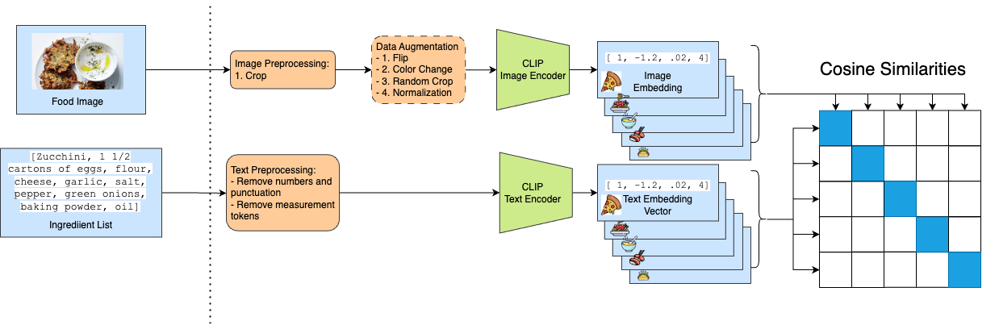
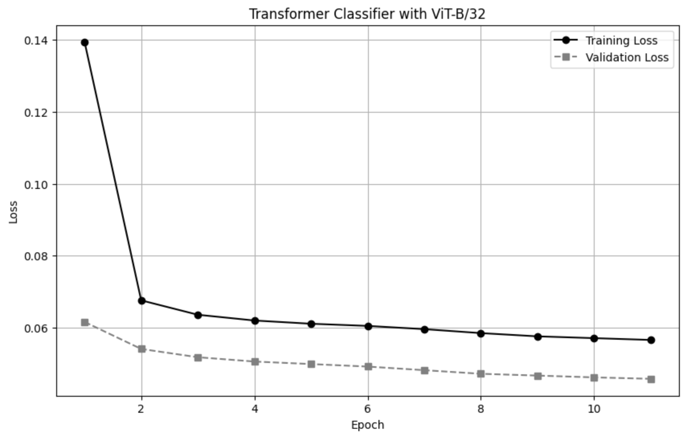
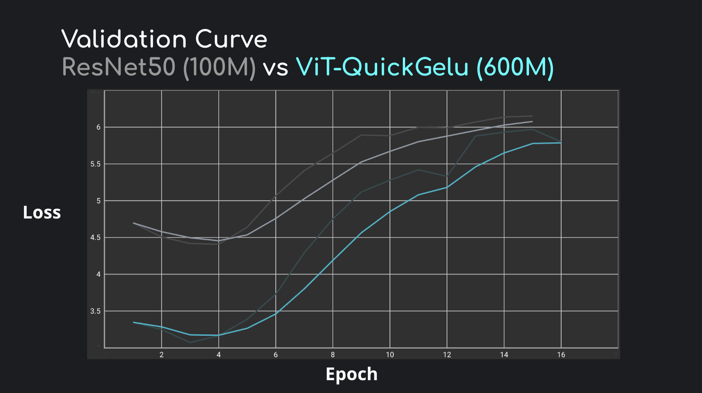
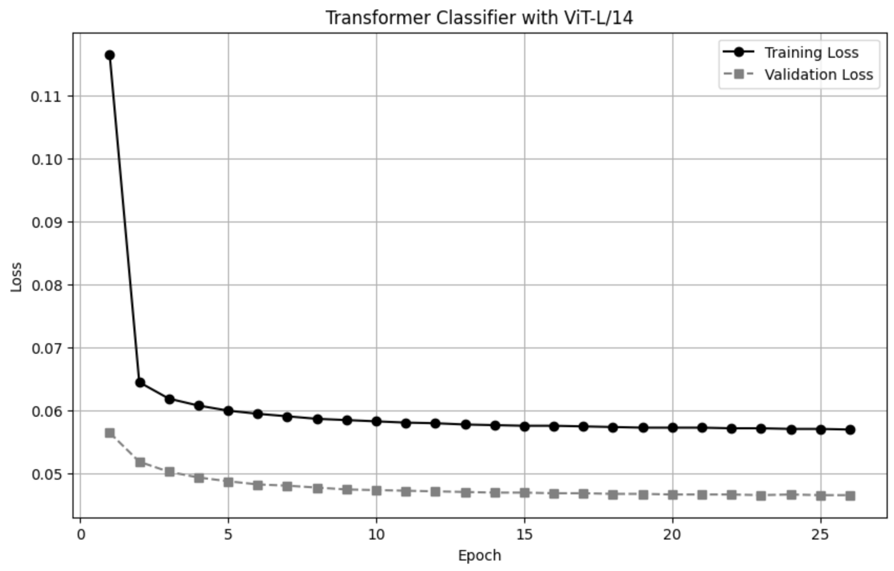

Understanding food composition from images is a challenging task with significant applications in dietary tracking, nutritional analysis, and automated recipe generation. This project explores the use of Contrastive Language-Image Pretraining (CLIP) for ingredient detection in food images, leveraging its multimodal capabilities to bridge visual and textual representations. We fine-tune CLIP on a curated dataset of labeled food images, associating visual features with corresponding ingredient names to improve recognition accuracy. To refine predictions, we implement zero-shot and few-shot learning approaches, enabling the model to generalize across diverse cuisines and unstructured food presentations. Our evaluation demonstrates that CLIP-based ingredient detection outperforms traditional CNN-based models, particularly in handling unseen food categories and complex compositions. By integrating confidence-based filtering and semantic similarity scoring, we further enhance precision in ingredient retrieval. This approach enables downstream tasks such as personalized nutrition tracking, smart recipe recommendations, and AI-driven food logging. Future work will focus on sourcing a larger and cleaner dataset, employing count-based vectors to quantify ingredient amounts for improved downstream regression, and expanding capabilities with fine-grained ingredient segmentation and multilingual support to enhance accessibility and robustness.
Understanding food composition from images remains a complex task due to the variability in ingredient appearances, diverse cuisines, and non-standardized recipe formats. Reliable ingredient detection has the potential to revolutionize applications in personalized nutrition, dietary tracking, and automated recipe generation. Recent advances in contrastive learning—exemplified by CLIP—offer a promising avenue for bridging visual and textual representations. In this work, we fine-tune CLIP on a food image dataset and introduce a pipeline that includes clustering-based ingredient standardization and multi-hot encoding to effectively handle multi-ingredient scenarios.
Inverse Cooking aims to generate structured recipes from food images by identifying ingredients using a neural network and reconstructing the recipe with a set-transformer. This approach enables automatic ingredient detection and step-by-step instruction generation, improving the interpretability of food recognition models.
Picture-to-Amount (PiTA) introduces a cross-modal embedding space to estimate ingredient quantities from food images. Unlike previous models that focus solely on ingredient classification, PiTA predicts ingredient amounts, facilitating more accurate nutritional estimation and meal reconstruction.
These methods highlight advancements in food recognition and multimodal learning. Our approach extends these works by clustering semantically similar ingredients and utilizing Contrastive Language-Image Pretraining (CLIP) for zero-shot recognition. Additionally, we integrate multi-hot encoding and count-based vectors for improved ingredient representation and downstream regression tasks.
We employ OpenAI’s CLIP (Contrastive Language-Image Pretraining) as the vision backbone for ingredient recognition. CLIP is a multimodal model trained on large-scale image-text pairs to learn a shared embedding space, enabling zero-shot and few-shot learning for downstream tasks. Specifically, we utilize the ViT-L/14-QuickGELU architecture, which provides superior feature extraction compared to smaller variants like ViT-B/32. The Vision Transformer (ViT) within CLIP processes input food images into high-dimensional feature embeddings, which are later mapped to textual embeddings for ingredient classification.
CLIP’s vision encoder follows the ViT-L/14-QuickGELU architecture, which consists of:
Patch-based tokenization: Input images are split into non-overlapping patches of size before being fed into the Transformer.
Transformer-based feature extraction: A deep Transformer network models spatial relationships across image patches, improving global contextual understanding.
QuickGELU activation: A variant of GELU activation that accelerates training convergence and improves numerical stability.
Shared embedding space: Image and text representations are aligned via contrastive learning, allowing seamless retrieval of semantically related ingredients.
To extract feature embeddings from food images, we pass each image through the CLIP ViT-L/14 encoder. The extracted embeddings are L2-normalized to facilitate cosine similarity computations, ensuring robust distance-based comparisons. The feature representation for an input image is computed as:
where denotes the ViT feature extractor, and represents the L2-norm.
To enhance ingredient recognition, we leverage CLIP’s contrastive learning framework, which aligns image and text embeddings using the InfoNCE loss. This objective function optimizes similarity between correct image-ingredient pairs while penalizing incorrect associations. Given an image embedding and its corresponding text embedding , the loss is formulated as:
where represents the cosine similarity between embeddings, is a temperature hyperparameter, and is the batch size. This loss function ensures that image and ingredient embeddings remain well-separated in the shared space, facilitating improved ingredient retrieval. By integrating InfoNCE loss, our approach effectively captures fine-grained semantic correlations in food compositions, leading to more accurate ingredient predictions.
The dataset used in this study is derived from the Food Ingredients and Recipes Dataset with Images, sourced from Kaggle. This dataset was originally created by scraping recipe data from the Epicurious Website and contains a collection of **13,000 samples**, each consisting of an image, recipe title, ingredient list, and full recipe text.
We used the Food Ingredients and Recipes Dataset with Images dataset1 for this project.
To facilitate structured learning, we preprocess the dataset as follows:
Data Structuring: The dataset is stored as an image folder and a corresponding CSV file containing structured fields: (Title, Image Path, Ingredients, Recipe Text).
Ingredient Cleaning and Normalization:
Ingredients are tokenized and standardized, removing
variations due to spelling, pluralization, and minor wording differences
(e.g., "tomatoes"
"tomato").
Measurement units (e.g., "1 cup of flour"
"flour") and preparation methods (e.g.,
"chopped onions"
"onion") are filtered to retain only the ingredient
names.
Handling Missing Data: Entries with missing ingredient lists or image paths are removed to ensure dataset consistency.
Cluster-Based Ingredient Grouping:
Ingredients are clustered using
HDBSCAN and Agglomerative Clustering
to group semantically similar ingredients (e.g.,
"cherry tomato" and "tomato paste").
Each image is mapped to a multi-hot encoded vector representing the ingredient clusters for improved generalization in model training.
By applying this preprocessing pipeline, we ensure that the dataset is well-structured, reduces redundancy in ingredient representation, and enhances the accuracy of multimodal learning.
To improve ingredient recognition, we cluster semantically similar ingredients and represent them as multi-hot encoded vectors. This approach reduces noise in ingredient labels and enhances generalization across variations in ingredient naming.
We apply hierarchical density-based clustering using HDBSCAN and Agglomerative Clustering to group similar ingredients based on their embeddings. These embeddings are extracted from ingredient names using OpenAI’s CLIP text encoder, ensuring that semantically related ingredients (e.g., “tomato,” “cherry tomato,” “tomato paste”) belong to the same cluster.
Given an ingredient embedding matrix , where is the number of unique ingredients and is the embedding dimension, we compute the pairwise cosine distance matrix:
We then apply HDBSCAN to detect dense clusters and Agglomerative Clustering with an adaptive distance threshold to merge fine-grained ingredient groups. The final cluster labels are assigned using a Large Language Model (LLM) (Groq’s LLaMA-3.3-70B) by passing representative ingredients from each cluster for human-readable labeling.
Since each image may contain multiple ingredients, we encode ingredient presence using a multi-hot vector. Given a total of clusters, each image is represented as a binary vector , where:
This structured representation enhances model performance in downstream tasks such as ingredient prediction, food classification, and nutritional analysis. Furthermore, it allows for count-based vector extensions, where ingredient amounts are estimated based on soft clustering probabilities.
By clustering semantically similar ingredients and encoding them as multi-hot vectors, we:
Reduce ingredient label sparsity and variations in textual descriptions.
Improve model generalization to unseen food compositions.
Enable interpretable ingredient tracking for dietary and nutritional analysis.
Future work will explore refining cluster assignments using self-supervised learning and leveraging count-based vector representations for precise ingredient amount estimation.

The final part of the pipeline as seen in Figure 3 takes in an image embedding from the vision transformer, either the pre-trained ViT-B-32 or the ViT-L-14-quickgelu we trained ourselves, for feature extraction and a Transformer encoder for classification. Given an input image , the vision transformer generates a or -dimensional embedding . This embedding is processed by a -layer Transformer encoder with attention heads, a feedforward dimension of , and dropout . The output is passed through a linear layer to produce logits for multi-label classification, with 332 being the length of the multi-hot vector and the number of ingredient clusters generated in the data pre-processing.
We train the model using binary cross-entropy loss with logits: where is the sigmoid function, are the logits, and are the binary labels. The model is optimized using SGD with momentum , initial learning rate , and a ReduceLROnPlateau scheduler. Training runs for epochs with early stopping based on validation loss.
The vision transformer is frozen during training, and only the Transformer encoder and classification head are optimized. We use a batch size of and evaluate performance using Hamming Loss. Predictions are obtained by thresholding the sigmoid-activated logits at .
To determine the optimal image encoder for our downstream classification task, we finetuned CLIP using several architectures on our curated food dataset. Our initial experiment utilized a ResNet50 model (approximately 102 million parameters), which converged within four epochs to a validation loss of 4.5 under the InfoNCE objective. Subsequently, we evaluated the ViT-L-14-QuickGELU model—a vision transformer variant that met our computational constraints with approximately 427 million parameters. This model also converged in four epochs, but achieved a notably lower validation loss of 3.2, indicating a stronger alignment between image embeddings and ingredient pairs.

In order to compare, we first used the ViT-B-32 model that was pretrained with OpenAI as the first part of our pipeline. The transformer classifier model was then trained for 11 epochs using binary cross-entropy loss with a learning rate of 0.01 and a batch size of 32. Early stopping was implemented based on validation loss to prevent overfitting.
By the final epoch (epoch 11), the model achieved a training loss of 0.0566 and a validation loss of 0.0458, demonstrating consistent improvement over the training process. The Hamming Loss, which was chosen due to its ability to measure the fraction of incorrectly predicted labels, reached 0.0138% on the validation set.


We then also used the ViT-L-14-QuickGELU model that was trained on our dataset for ingredient detection. The model was trained for 26 epochs using binary cross-entropy loss with a learning rate of 0.01 and a batch size of 32. Early stopping was implemented to prevent overfitting, triggered after three consecutive epochs without improvement in validation loss.
By the final epoch (epoch 26), the model achieved a training loss of 0.0570 and a validation loss of 0.0466, demonstrating consistent improvement throughout the training process. The Hamming Loss stabilized at 0.0144 on the validation set.
As shown in Figure 4 and Figure 6, the ViT-B-32 and ViT-L-14-QuickGELU models both seemingly achieved strong performance in ingredient detection. The ViT-B-32 converged faster, reaching a validation loss of 0.0458 and Hamming Loss of 0.0138 by epoch 11. In contrast, the ViT-L-14-QuickGELU achieved a validation loss of 0.0466 and Hamming Loss of 0.0144 by epoch 26, with training halted early due to convergence.
Further experimentation can be done to verify how accurate these results are; Due to the model not being that complex and how large and sparse the true label multi-hot vectors are, it is possible the model learned to predict a zero/false value most of the time for all the ingredients rather than learning the true ingredients of the image.
Gregory Shklovski: Performed a fine-tuning of the CLIP image encoder
and created CLIP inference infrastructure. Additionally, contributed
data pre-processing scripts for train-test split and anomaly
removal.
Angela Dang: Led the dataset preprocessing, ingredient standardization,
and clustering pipeline. Developed and implemented hierarchical
clustering using HDBSCAN and Agglomerative Clustering to group
semantically similar ingredients. Designed and optimized the multi-hot
vector encoding system to represent ingredient presence in food
images.
Jesus Palo: Experimented with and architected different models for
single ingredient classification which lead to the final classification
part of the pipeline (MLP, CNN, or Transformer). Assisted with data
pre-processing regarding generating multihot vectors as labels for the
food images.
| Model | Classifier Type | Loss Value |
|---|---|---|
| ViT-L/14-quickgelu (our trained) | MLP | 0.5953 |
| ViT-B/32 (Pre-trained) | MLP | 0.5075 |
| Raw Image (No CLIP) | MLP | 0.6385 |
| ViT-L/14-quickgelu (our trained) | Transformer | 0.5953 |
| ViT-B/32 (Pre-trained) | Transformer | 0.5151 |
Before the final decision to use a transformer classifier for the final part of the pipeline, we first experimented with various architectures and inputs when it comes to classifying a single ingredient. As seen in Table 1, using the embeddings from the vision transformers yielded better results than raw images when it came to the task of single ingredient classification, which led us to using vision transformers to generate embeddings for our input rather than a raw image.